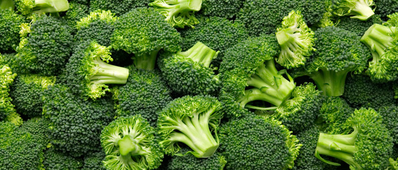

A fancy vegetable that is commonly eaten by healthy individuals , vegans, and vegetarianS. They are a simple green color with a thick stem. They resemble the image of a small tree. Broccoli is literally one of the healthiest foods in the world. Broccoli is so awesome.
They are extremely beneficial to the consumer, they have nutrients and vitamins packed in them. They can be steamed, stir-fried, and seasoned as well as other ways to cook/serve/eat them.
Broccoli can be cooked in many different ways. They are cooked with seasonings, meat, sauce, gravy, or other forms used to flavor or cook them. They are commonly boiled but can also be steamed, stir fried, or fried with breading. They can also be cooked with foods such as carrots, potatoes, pasta, cheese, butter, or other vegetables and meats. They are also popular to be cooked with an egg on top.